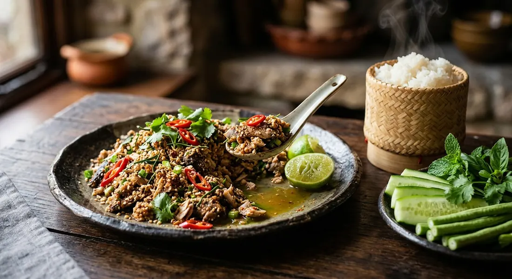

Catfish grilled over charcoal, flaked, minced and dressed like any other larb — toasted rice, roasted chilli, lime, fish sauce — then herbs and hot sticky rice. Isaan's minced-meat salad, remade with the fish that has no scales and few bones.

ลาบ (laab) is the Isaan minced-meat salad — any meat, pounded or minced, dressed with roasted chilli, toasted rice, lime and fish sauce, and ปลาดุก (pla duk) is the walking catfish that lives in every rice paddy and ditch in the region. Swap the usual pork for catfish and you get laab pla duk: the version the Institute of Nutrition at Mahidol University calls a signature of Isaan's merit-making feasts — catfish is cheap, everywhere, and its flesh is sweet, firm and rich, with no scales and few bones to fight.
Every published Thai recipe agrees on the start: the catfish is grilled first — over charcoal, about fifteen minutes, until the skin chars — and only then flaked and dressed. That grilling is the dish's whole flavour; the smoke is what you taste before the chilli arrives. The older village tradition — raw minced fish, its own bile for bitterness, a splash of fermented fish sauce — still exists, but no source we found minces the fish raw; they all send it through the fire.
What happens after the grill is where the recipes split. The quick home version dresses the warm flaked fish in a bowl and is done. The street version — ครัวคุณต๋อย's TV recipe — stir-fries the fish with garlic and young galangal until it turns golden and fluffy first. Krua.co's, from the แสงแดด cookbook house, warms the fish through gently with pounded old galangal and a spoon of water. Three routes to the same plate of sour-salty-hot fish with the nutty crunch of toasted rice on top.
| Thai | English | Amount |
|---|---|---|
| ปลาดุกย่าง | Grilled catfish (flaked meat) | 4 fish (~500 g meat) |
| น้ำมะนาว | Lime juice | 3 limes |
| น้ำปลา | Fish sauce | 3 tbsp |
| พริกป่น | Roasted chilli powder | 1 tbsp |
| ข้าวคั่ว | Toasted rice powder | 2 tbsp |
| พริกแดงจินดาซอย | Red jinda chillies, sliced | 10 |
| ต้นหอมซอย | Spring onions, sliced | 3 stalks |
| ผักชีซอย | Coriander, chopped | 1 stalk |
| ใบมะกรูดซอย | Kaffir lime leaves, finely sliced | 5 leaves |
The warm pot (Krua.co): one catfish flaked coarse, warmed in a pot over medium heat with pounded old galangal and a little water (รวน), then 8 sliced shallots, 1½ tbsp fish sauce, 2 tbsp lime juice, toasted-and-ground dried bird's eye chilli, sliced fresh chillies, 2 tbsp toasted rice, spring onion, coriander and a crown of mint. The street pot (ครัวคุณต๋อย): five fish, minced; garlic and young galangal fried in a little oil until fragrant, the fish stirred through the pan until golden and fluffy (คั่วให้เหลืองฟู), then shallots, fried shallots, three kinds of coriander, kaffir lime leaves, mint, fried dried chillies, lime and fish sauce. The village pot (Mahidol): 234 g catfish with 30 g pla ra boiled with lemongrass and 235 g water — the fish chopped bones and all in a mortar with the boiled pla ra, lime, chilli powder and toasted rice. The weeknight pot (Kapook): one catfish pounded with young galangal, dressed light, under a pile of raw vegetables. The dry-or-wet pot (Esan108): two catfish minced with galangal — stir the mince dry in a pot if you want it crumbly, or dress it wet, as you like.
The heat after the grill. Aroifin, Wongnai, Kapook and the wet Esan108 version dress the flaked fish straight in the bowl. Krua.co warms it through with pounded old galangal and a little water (รวน). ครัวคุณต๋อย dry-fries it with garlic and galangal until golden and fluffy, and Esan108 offers the same dry stir as its "dry larb" option. Everyone grills first; only some cook twice.
Pla ra or fish sauce. Mahidol builds the dressing on pla ra boiled with lemongrass — the village way. All the other sources season with fish sauce alone. If you want the fermented depth, that's the recipe that has it.
Galangal. Young galangal minced in with the fish (Kapook, Mahidol, ครัวคุณต๋อย), old galangal pounded in (Krua.co), or none at all (Aroifin, Wongnai, the UGC recipe). Where it appears, the stated job is the same: kill the fishiness.
Shallots. Eight whole shallots (Krua.co), 100 g of them (ครัวคุณต๋อย), a token three (the Wongnai UGC), 15 g (Esan108) — or none (Aroifin, Wongnai, Kapook). The classic pork larb always has shallots; the catfish versions can't agree whether the fish needs them.
Sugar. Only the Wongnai UGC recipe adds a teaspoon. Every other source stops at sour-salty-hot. If your larb is sweet, it isn't this dish.
The bones. Mahidol chops the grilled fish bones and all — catfish bones are soft enough to eat. Wongnai takes the opposite route: mince the meat fine so no stray bone catches the throat. Two answers to the same problem, both from people who eat the dish daily.
Mint and kaffir lime. Mint finishes the pot in Krua.co, ครัวคุณต๋อย, Mahidol, Esan108 and the UGC. Kaffir lime leaves appear only in Aroifin, Wongnai and ครัวคุณต๋อย. No source uses both the same way — pick the herbs you can smell.
This recipe is translated from the following Thai-language sources. Where they disagree, we've said so.
1. Aroifin — "วิธีทำ ลาบปลาดุกย่าง เมนูอีสานแซ่บๆ หอมๆ มือใหม่ทำตามได้" by BAHMII (the recipe used here, with Wongnai; the rest-and-flake tip) — aroifin.com
2. Wongnai — "แจกสูตรฟรี! ลาบปลาดุกย่าง เมนูอาหารอีสานทำง่าย แซ่บสุดติ่ง!" by จิ๋วหิวโซ (the recipe used here; the fine-mincing rule) — wongnai.com
3. Kapook Cooking — "ลาบปลาดุกย่าง หอมข้าวคั่วรสนัวยั่วน้ำลาย" (the light weeknight pot with young galangal) — cooking.kapook.com
4. Krua.co — "ลาบปลาดุก" by สำนักพิมพ์แสงแดด, recipe by พีระพันธ์ กาฬภักดี (the warmed pot, รวน with old galangal and shallots) — krua.co
5. ครัวคุณต๋อย — "ลาบปลาดุก" from the TV show (the street pot, คั่วจนเหลืองฟู) — kruakhuntoi.com
6. Mahidol University, Institute of Nutrition — "ลาบปลาดุก" ตำรับ 4 คน (the village pot with boiled pla ra; the nutrition notes) — inmu.mahidol.ac.th
7. Wongnai UGC — "สูตร ลาบปลาดุก" by ส้มตำบัวเพชร (the sugar dissenter) — wongnai.com
8. Esan108 — "ลาบปลาดุก อาหารอีสานอีกหนึ่งเมนูที่ต้องลอง" (the dry-or-wet pot) — esan108.com